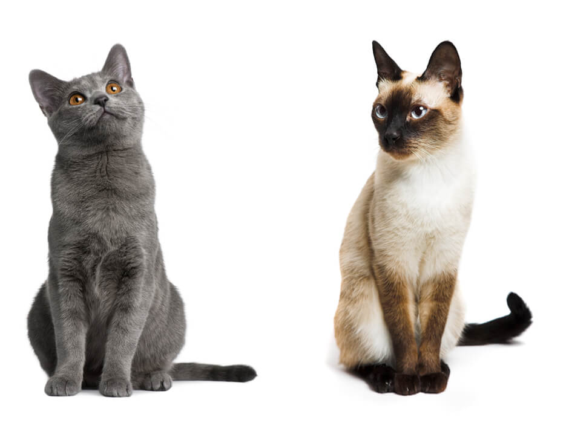
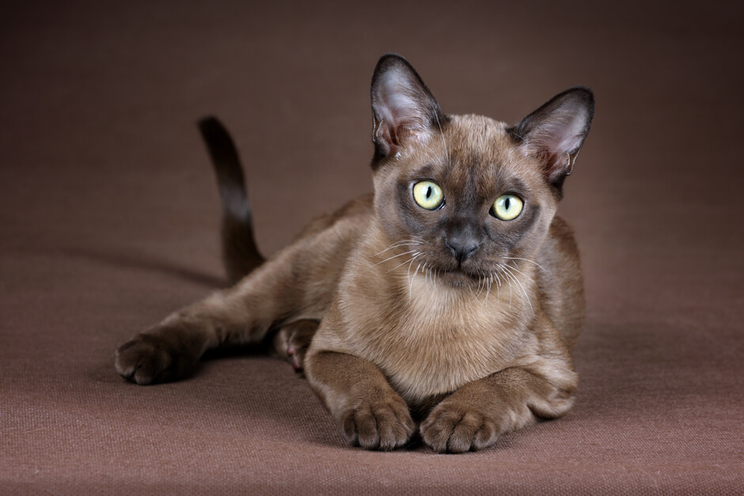
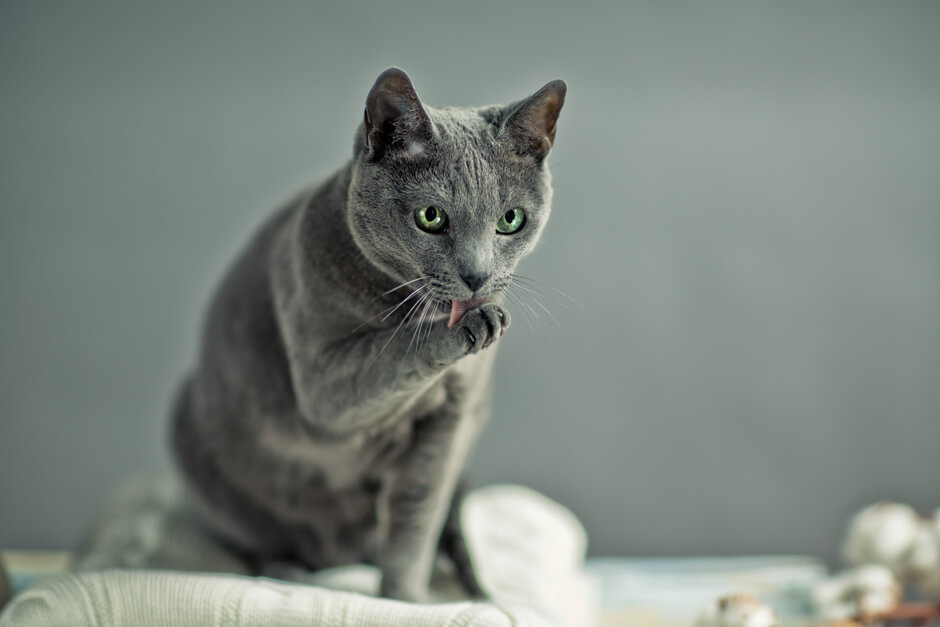
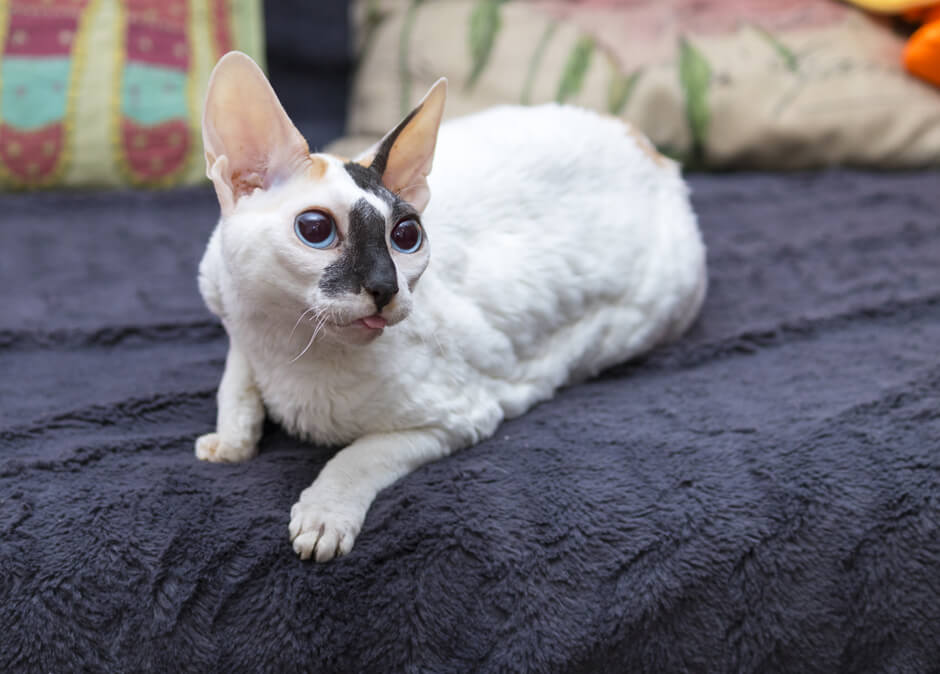
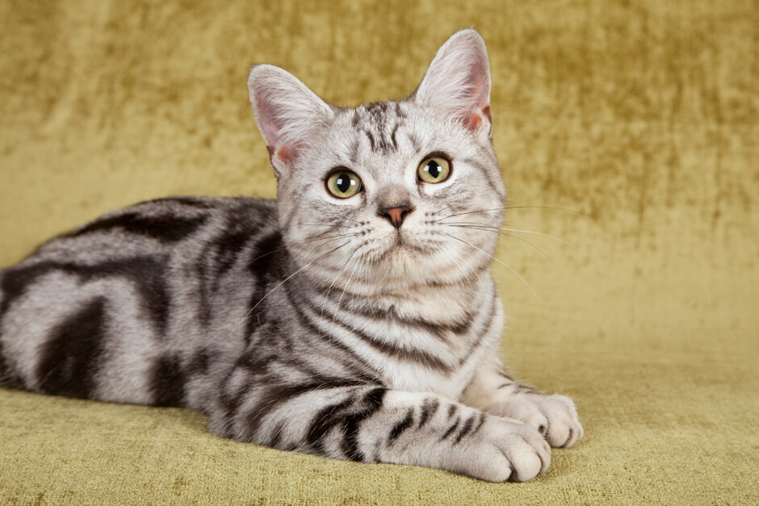
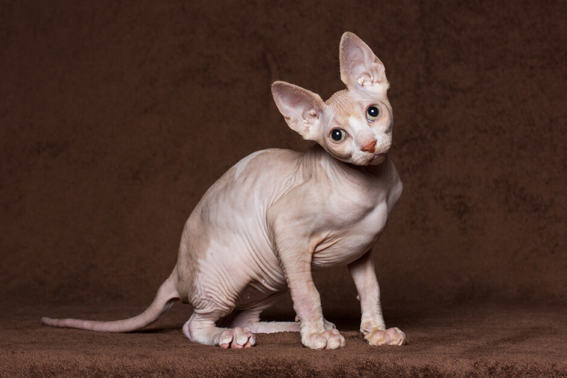

Мир кошек удивительно многолик. На сегодняшний день существует более двухсот официально признанных кошачьих пород. Чтобы легко ориентироваться во всём многообразии, необходимо понять принципы классификации этих млекопитающих.
Изначально виды кошек различали по длине шерсти. Существовало всего две категории: короткошёрстные и длинношёрстные. Но время показало несостоятельность такой систематизации: вследствие естественных мутаций или в результате работы селекционеров появились кошки с шерстью средней длины, которых невозможно было отнести ни к одной из двух категорий. Плюс ко всему животные очень часто отличались по размеру: большие кошки, маленькие, средние — это тоже нужно было учитывать. Поэтому фелинологи предложили четыре варианта классификации кошек.

Здесь всего две категории: кошки с крепким телосложением и кошки — с изящным.
Бурманская кошка не сложна в уходе, поскольку имеет минимальный подшёрсток, не позволяющий спутываться шерсти в колтуны. Достаточно пару раз в неделю проходиться по шелковистой шубке гребнем с частыми зубчиками и массировать кожу массажной щёткой, удаляя отмершие волоски и стимулируя рост новых. Правда, в период сезонной линьки вычёсывать домашнего питомца придётся минимум два раза в сутки.

Русская голубая кошка характер имеет мягкий, но независимый. Она любит общение, но не слишком приемлет объятия и физический контакт. Вычесать её она вам вряд ли позволит, но при этом никогда не выпустит когти, если вы всё-таки попробуете настоять на своём.

Кудрявые красавцы корниш-рекс со своей каракулевой шёрсткой вполне справляются самостоятельно. Но вот коготками вам придётся регулярно заниматься: подушечки лапок слишком малы, и не могут вместить их в себя полностью. Поэтому корниш-рексу регулярно необходимо делать кошачий «маникюр». Необходимые рекомендации по этой процедуре вы сможете получить у ветеринарного врача. А ещё эта порода склонна к перееданию, поэтому количество корма должно быть строго регламентировано.

Американские жесткошёрстные кошки отличаются волнистой шерстью. Эффект «проволочной шубки» создают шерстинки на бёдрах, хвосте, голове и хребте, которые либо надломлены, либо загнуты и скреплены между собой. Животных этой породы расчёсывать не рекомендуется даже после купания, иначе «пружинки» шерсти исчезнут, и животное потеряет свой шарм и обаяние.

Одни считают, что сфинксы – это лучшие кошки в мире, другие совершенно не понимают, как можно хотя бы приблизиться к такому животному, не говоря уже о том, чтобы погладить его. Тем не менее, сфинксам нужна ласка и внимание. А ещё они нуждаются в тепле: бесшёрстные кошки часто мёрзнут, и чтобы согреться, могут лечь на батарею или прислониться к работающей духовке, что чревато ожогами нежной кошачьей кожи. Поэтому владельцу сфинкса необходимо позаботиться о тёплой лежанке для питомца и о том, чтобы в доме не было сквозняков.